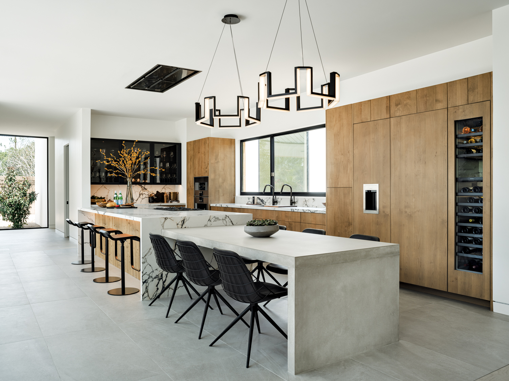
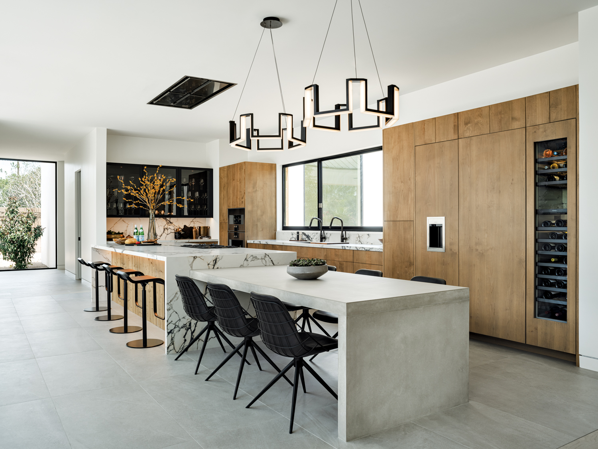

What is Modern Minimalist Style?
Modern minimalist design embraces simplicity, clean lines, and open spaces. It removes excess ornamentation and focuses on functionality, with an emphasis on neutral tones, natural light, and modern materials like glass, concrete, and metal.
Common Elements
- Monochrome or neutral color palettes
- Geometric furniture with sleek lines
- Open layouts with minimal decor
- High-function, low-clutter environments
Gallery
 

Budget-Friendly Tips
Focus on decluttering and choosing multifunctional pieces. Use paint and lighting to create openness. Add small touches like plants or minimalist artwork for personality without clutter.